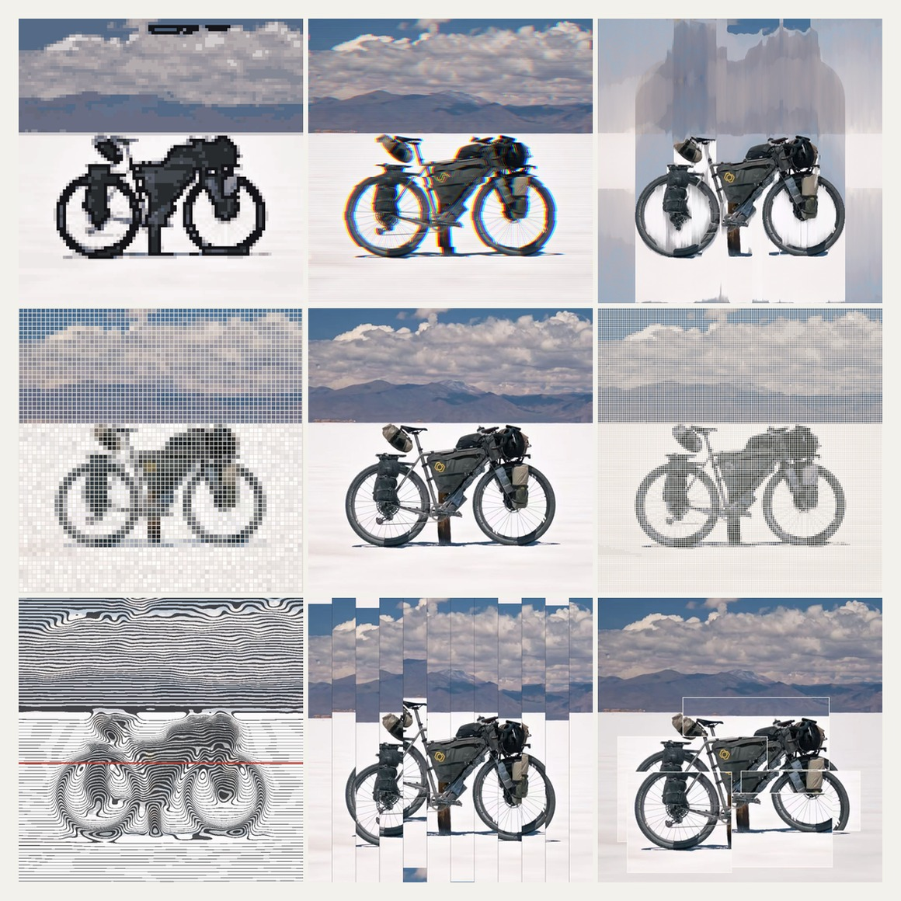
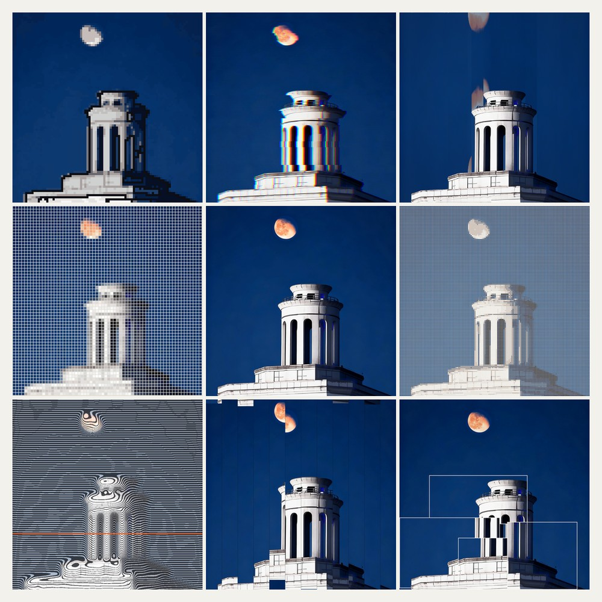
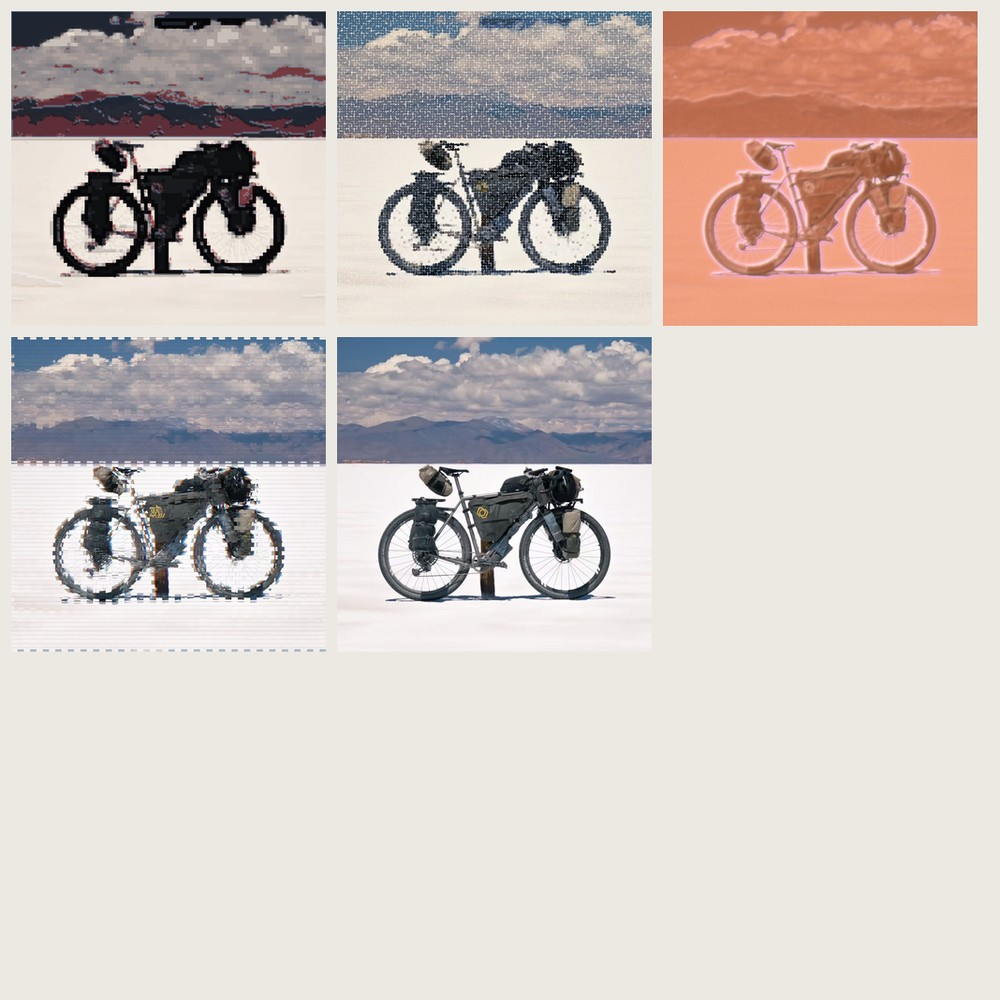
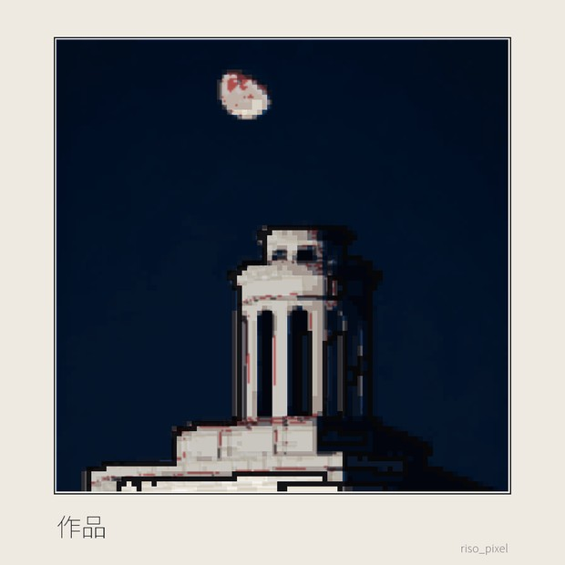
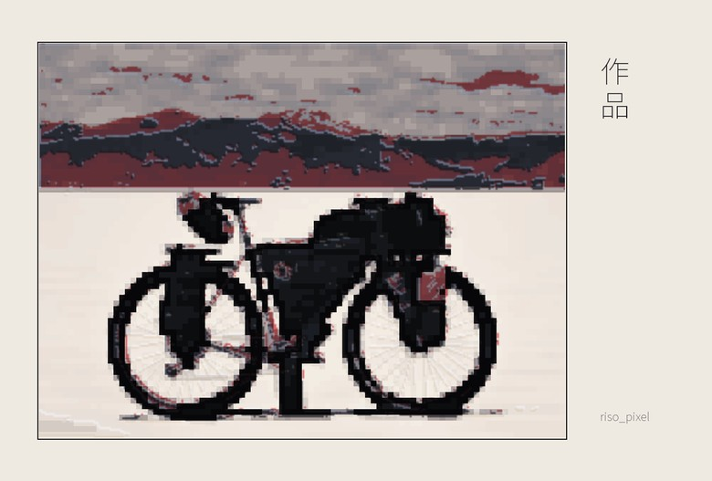

stylegrid
stylegrid
一张照片进，
一套作品出
。
把照片拖到这里
或点击选择 · PNG / JPG / WEBP，不超过 20 MB
没有趁手的照片？用示例素材试试
›

hero.jpg
本地样片
更换照片

深海蓝调

颗粒纪实

银盐夜色

炽热信号
自定义
更多选项
›
自定义风格池
未选择
色彩混合
混血配方
潮汐冷光
月蚀单色
霓虹余温
沙丘低饱和
视觉密度
均衡
克制
丰沛
输出格式
同时生成三套比例
V
竖版 · 3:4
S
方版 · 1:1
H
横版 · 4:3
题签
可选 · 默认纯图片海报
8 / 40
生成整套作品
本地运行 · 不产生任何网络请求
0%
正在读取构图关系…
本地引擎 · 不产生网络请求
九宫格
混合构图
海报变体
痕迹分
—
下载作品包
清空结果
再做一张
›
最近作品
已更新